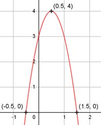

Aufgabe 4 f(x) = - 4x2 + 4x + 3 f'(x) = - 8x + 4, f''(x) = - 8, f'''(x) = 0 Definitionsbereich: -∞ < x < ∞ Wertebereich: -∞ < f(x) ≤ 4 (siehe Extrempunkte) Asymptoten: - Symmetrie: - Nullstellen: -4x2 + 4x + 3 = 0 A, B, C - Formel: A = -4, B = 4, C = 3 x1,2 = x1,2 = x1,2 = - 4 ± 8 x1,2 = --------- -8 x1 = 1,5 x2 = -0,5 N1(1,5|0), N2(-0,5|0) Schnittpunkt mit der y-Achse: f(0) = - 4 * 02 + 4 * 0 + 3 = 3 Sy(0|3) Extrempunkte: - 8x + 4 = 0 | +8x 8x = 4 | :8 x = 0,5, f(0),5 = -4 * 0,52 + 4 * 0,5 + 3 = 4 f''(x) = -8 < 0 --> Hochpunkt (0,5|4) Alternativ: Scheitelpunktberechnung f(x) = -4x2 + 4x + 3 |: (-4) f(x) ---- = x2 - x - 0,75 -4 f(x) ---- = (x - 0,5)2 - 0,25 - 0,75 | * (-4) -4 f(x) = - 4(x - 0,5)2 + 4 S(0,5|4) Wendepunkte: -8 = 0 --> Widerspruch, keine Wendepunkte Graph:
